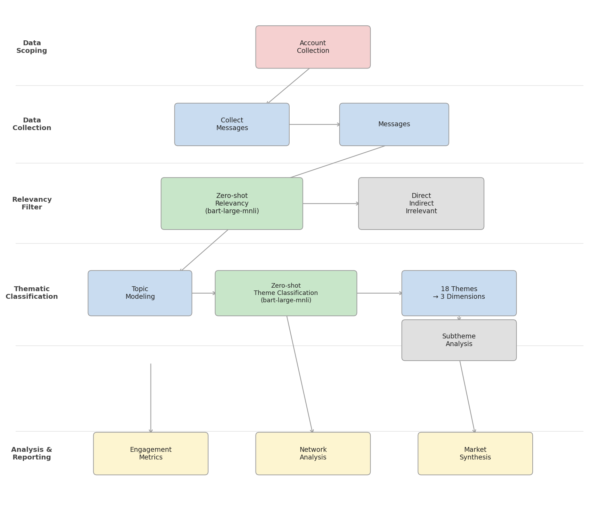
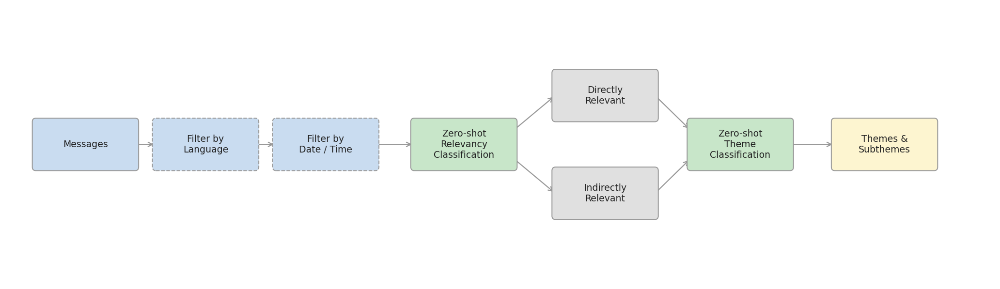

Bill & Melinda Gates Foundation · via ITAD
Global Health Advocacy Evaluation
Completed · 2022The Project
Context & Objectives
The Gates Foundation commissioned ITAD to evaluate the effectiveness of its Global Fund Advocacy Portfolio (GFAP) — a network of NGO grantees working to influence governments to increase contributions to the Global Fund for AIDS, TB and Malaria ahead of the 7th replenishment conference.
CASM Technology provided the quantitative social media analysis module. The brief was to map what grantees were actually saying online, how their messaging varied by market and by organisation, and how advocacy tactics (inside track vs outside track) were distributed across the portfolio.
My analysis fed into ITAD's broader mixed-methods evaluation alongside country surveys, interviews and case studies — providing the systematic, large-scale view of advocacy content that qualitative methods alone could not produce.
My Role
Contributions
Technical Lead. I was responsible for the full pipeline design — from data architecture and collection through classification, analysis and synthesis.
I designed the three-tier relevancy framework (Direct / Indirect / Irrelevant), built and validated the 18-theme thematic framework from scratch, and produced all narrative and tactics analysis at both market and grantee level.
I also designed and ran the model evaluation — benchmarking classification performance against 300 manually annotated samples to validate the pipeline before it was used to analyse the full corpus.
Scope
Project Scope
- Posts analysed: 43,282 across Twitter, Facebook and Instagram
- Markets: UK, US, EU/EC, France, International
- Languages: English and French
- Time period: 2020–2022 (covering COVID-19 pandemic period)
- Organisations: Gates Foundation grantee NGOs, GFAN (Gates Global Fund Advocacy Network) member accounts
- Media types: Social media (Twitter/Facebook/Instagram) and mainstream media (English and French press)
- Evaluation: 300-sample human annotation benchmark for relevancy and theme classification
Method
Analysis Pipeline
Phase 0 — Foundation & Architecture: system blueprint, data collection infrastructure, annotation guidelines and thematic framework design.
Phase 1 — Data Collection: 43,282 posts scraped from grantee accounts across Twitter, Facebook and Instagram; English and French corpora prepared separately.
Phase 2 — Topic Extraction: zero-shot classification using facebook/bart-large-mnli to assign topic scores; batched inference with a custom PyTorch DataLoader for scale.
Phase 3 — Theme Mapping & Relevancy: raw topic scores mapped to the 18-theme framework; each post assigned Direct / Indirect / Irrelevant relevancy label. Validated against 300 human-annotated samples.
Phase 4 — Market & Network Analysis: per-market narrative breakdowns (UK, US, EC, France, International); GFAN advocacy network analysis using NetworkX; grantee-level thematic fingerprints; inside-track vs outside-track tactics breakdown.
Phase 5 — Synthesis & Delivery: country-level and grantee-level synthesis reports; cross-market comparative analysis; integration into ITAD's evaluation framework.
Full pipeline — scoping through analysis

Message filtering pipeline

Analysis
Network & Market Analysis
A key analytical layer was mapping the GFAN (Gates Global Fund Advocacy Network) — identifying how accounts clustered thematically, who shared messaging with whom, and which organisations drove narrative cohesion across the network.
Network graphs were built for mentions, hashtag co-use and link-sharing using NetworkX, with node size weighted by degree centrality. This produced structural portraits of how advocacy coordinated (or failed to coordinate) across grantees.
Per-market analysis tracked volume over time, theme distribution, grantee engagement and advocacy tactics — producing both strategic overviews for ITAD and granular, grantee-specific breakdowns for country case leads.
The French-language corpus was analysed in parallel with an equivalent pipeline, with separate evaluation benchmarks confirming comparable performance on French content.
Outcomes
Results & Impact
43,282 posts analysed across 5 markets and 2 languages. Full thematic and relevancy classification applied to English and French corpora.
Country-level narrative synthesis delivered for the UK, US, EU/EC, France and International markets — each combining quantitative theme distributions with qualitative narrative analysis. Grantee-level advocacy portfolios built for each NGO in the network.
Cross-market synthesis identified divergences in how different markets framed the replenishment ask — with pledging language dominant in the US and UK, and health systems framing stronger in the EU.
Analysis was integrated into ITAD's published evaluation for the Gates Foundation and presented to stakeholders at the November 2022 advocacy workshop.
Three-Layer Analytical Framework
Layer 1 — Relevancy Classification
Every post was classified into one of three relevancy tiers before any thematic analysis was applied. Directly Relevant content explicitly concerned the Global Fund replenishment — pledges, contributions, government asks. Indirectly Relevant content was related to global health broadly — disease burden, health systems, pandemic response — but did not directly address the replenishment ask. Irrelevant content was filtered out. This layer was the primary signal for measuring the focus and strategic coherence of grantee advocacy.
Layer 2 — Thematic Classification (18 themes)
Applied to all relevant content (Direct and Indirect), the 18-theme framework spans three dimensions: health topics — disease areas, vaccine advocacy, health systems strengthening and pandemic preparedness; advocacy tactics — inside-track government engagement, outside-track public mobilisation, campaign events and urgent calls to action; and contextual framing — LMIC voices, financial aid, COVID-19 impact and key political moments. This layer captured what grantees were communicating and how they were trying to influence.
Layer 3 — Subtheme Analysis
Each of the 18 themes carried a set of subthemes for granular narrative analysis — surfacing the specific claims, actors and framings within each theme. Subtheme analysis was applied selectively in the per-market and per-grantee deep dives to identify the precise narrative contributions of individual organisations and flag divergences from the portfolio-wide picture.
Model Evaluation
Validated against manually annotated samples by human reviewers across both English and French corpora. Two relevancy approaches were evaluated — a topic-mapping method and a zero-shot classification method — with the zero-shot approach producing a material accuracy improvement.
| Evaluation | English | French |
|---|---|---|
| Relevancy — topic-mapping | 82% | — |
| Relevancy — zero-shot (improved approach) | 93% | ~92% |
| Direct themes | 84% | 83% |
| Indirect themes | 78% | 79% |
| Evaluated on 100–300 manually annotated samples per evaluation. Lower performance on indirect themes reflects the inherently broader, more ambiguous category — expected and consistent across both languages. | ||
Monthly Post Volume by Grantee
Post volume over time per grantee, 2019–2022 — tracking the ramp-up in advocacy activity ahead of the 7th replenishment conference.
Grantee Theme Breakdown
Heatmap of post counts by grantee and theme — surfaces each organisation's thematic fingerprint and identifies which grantees drove specific narrative areas.
Cross-Grantee Twitter Mentions
Directed mention matrix showing how frequently each grantee mentioned others — mapping coordination patterns and which organisations drove cross-network engagement.
Grantee Hashtag Network
Bipartite network connecting each grantee to its most-used hashtags. Hub size reflects total hashtag activity; shared nodes (e.g. #GlobalFund, #GlobalHealth) reveal cross-grantee coordination around common campaign messaging.
Tech Stack
Links
- GitHub — gates-advocacy-analysis
- Report — confidential client deliverable